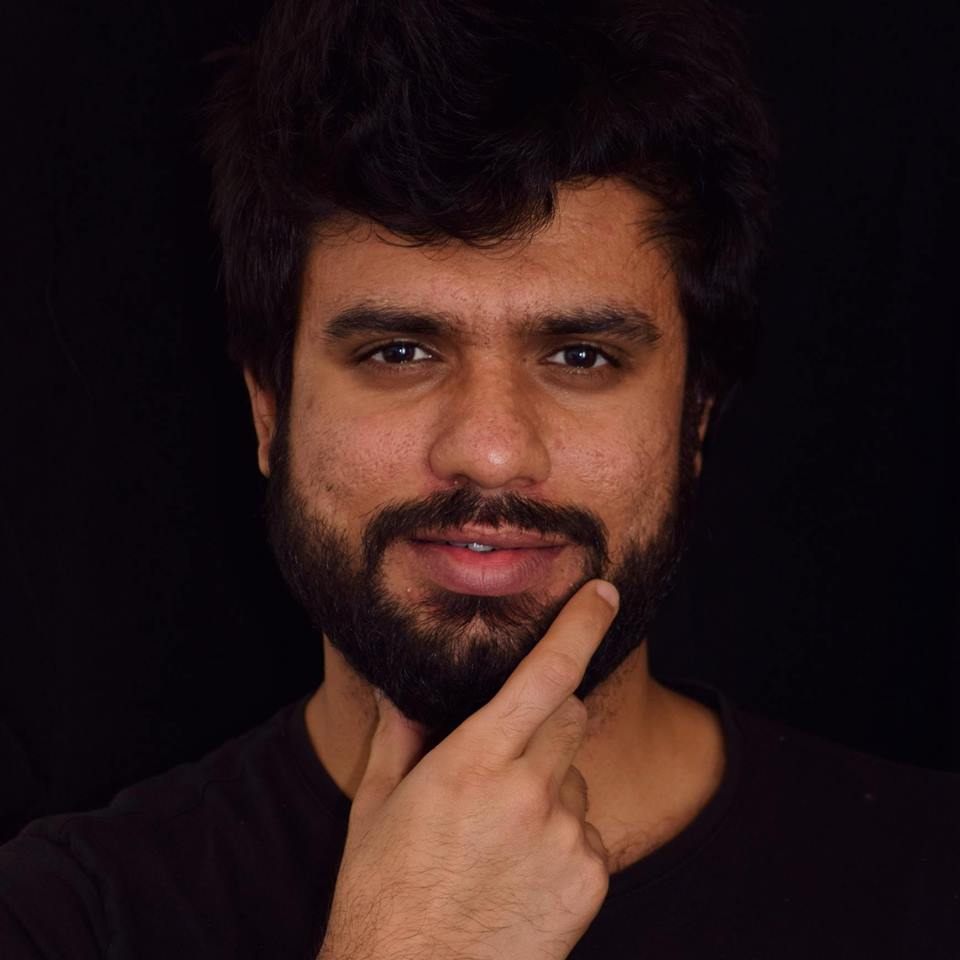

Dr.-Ing. · Assistant Professor · Metal Forming Simulation Expert
Faisal Qayyum.
I model the invisible — the crystallographic mechanics, deformation paths, and failure origins inside metals. Available for simulation consulting, research mentoring, and scientific writing.
About Me
From Microstructure to Insight
I am an experienced mechanical and materials engineer currently working as an assistant professor at the University of Tabuk, Saudi Arabia. My PhD — awarded magna cum laude from TU Bergakademie Freiberg, Germany — focused on modeling the deformation and damage multi-phase metallic materials using coupled crystal plasticity models. Since then, I have built a research group, secured international grants, and published 39+ papers with 1,230+ citations.
My expertise spans the full chain from experimental microstructure characterization to large-scale numerical forming simulations. I work fluently across DAMASK, ABAQUS, MatCalc, MTEX, and Python — bridging experiment and computation at every scale.
Beyond research, I mentor PhD students across continents, coach scientific writers, and share knowledge through tutorials, workshops, and podcasts. If you have a simulation challenge, a materials puzzle, or a proposal to build — I am your consultant.

Consulting & Expertise
What I Can Do For You
All engagements are scoped individually. Contact me for a quote.
Crystal Plasticity Simulation
DAMASK-based meso-scale modeling of polycrystalline deformation, texture evolution, and damage. Physics-based CPFEM model setup, calibration, and result interpretation.
Metal Forming FEM Consulting
ABAQUS-based large-scale forming simulations: forging, rolling, extrusion, sheet forming. Thermo-mechanical coupling, die design analysis, process optimization.
Phase Field Simulation
Microstructure evolution modeling for solid-state transformations, recrystallization, spheroidization, and grain growth in steels and alloys.
Mechanical Test Data Analysis
Expert interpretation of tensile, fatigue, hardness, and impact test results in the context of microstructure and failure physics. No lab work — pure analytical consulting.
Microstructure Characterization
SEM, EBSD, DIC data interpretation and modeling input preparation. Grain size statistics, phase fraction mapping, local strain analysis.
Process–Structure–Property Analysis
Full chain consulting: how processing parameters shape microstructure and how microstructure controls final performance. For alloy design, heat treatment, and forming process optimization.
Multiscale Modeling Strategy
Designing computational campaigns that connect nano, micro, meso, and macro scale models. Method selection, software workflow design, and result validation strategy.
Materials Failure Analysis
Root cause analysis of fracture, fatigue, and wear failures in metallic components. Suitable for industrial clients and legal/expert witness contexts.
PhD & Research Mentoring
Thesis direction, literature strategy, experimental design, and simulation planning for MSc and PhD researchers. Available for remote engagements globally.
Scientific Writing Coaching
Journal paper structure, clarity, and argumentation. Based on 39+ publications and 3 years running a research Writing Club across Germany.
Grant Proposal Consulting
Proposal structure, narrative, reviewer-targeting, and budget planning for DFG, AvH, DAAD, EU Horizon, and national funding schemes.
Custom Digital Courses & Workshops
Bespoke training for research teams: crystal plasticity for beginners, DAMASK workflows, ABAQUS forming, MTEX texture analysis, AI for research, scientific writing.
Research Impact
Publications & Academic Metrics
Chiu, C., Prabhakar, V., Tseng, S., Qayyum, F., et al. “Integrating experimental and numerical analyses for microscale tensile behavior of ceramic particle reinforced TRIP steel composites.” Composites Part A: Applied Science and Manufacturing, p.108384.
Qayyum, F., Chiu, C., Tseng, S., et al. “Local strain heterogeneity and damage mechanisms in zirconia particle-reinforced TRIP steel MMCs: in situ tensile testing with digital image processing.” Journal of Materials Science, pp.1–19.
Lypchanskyi, O., Chiu, C.C., Qayyum, F., et al. “Temperature dependent deformation behavior and texture evolution in AA6082 aluminum alloy: an integrated experimental and crystal plasticity simulation approach.” International Journal of Plasticity, 176, p.103942.
Qayyum, F., Umar, M., Dölling, J., Guk, S. and Prahl, U. Mechanics of New-Generation Metals and Alloys. Elsevier.
Qayyum, F., Guk, S. and Prahl, U. “Studying the damage evolution and the micro-mechanical response of X8CrMnNi16-6-6 TRIP steel matrix and 10% zirconia particle composite using a calibrated physics and crystal-plasticity-based numerical simulation model.” Crystals, 11(7), p.759.
What They Say
From Students & Collaborators
Working with Dr. Qayyum completely transformed how I think about crystal plasticity modeling. His hands-on guidance with DAMASK gave me the simulation foundation my PhD at KIT needed. He doesn’t just answer questions — he trains you to think like a scientist.
Dr. Qayyum’s mentorship shaped the direction of my entire thesis at TU Bergakademie Freiberg. Every feedback session was precise, constructive, and — most importantly — delivered with genuine investment in my success as a researcher.
As a process engineer at TSMC, I needed a very specific understanding of how microstructural mechanisms connect to real-world material behavior. Dr. Qayyum bridged that gap between academic rigor and engineering practice in a way I hadn’t found anywhere else.
Dr. Qayyum’s scientific writing workshop was a career-defining experience. He turned what felt like an overwhelming task into a structured, learnable skill. My confidence in writing and presenting research results improved dramatically.
Knowledge & Content
Tutorials, Teaching & Vlogs
I share everything I know — simulation workflows, writing strategies, and life in research.
Offload Podcasts
Candid conversations with guests about topics students care about
Writing Club
Productive writing tips for scientists and researchers
Research & DAMASK
Case studies, DAMASK crystal plasticity workflows, and simulation examples
ABAQUS Simulations
Thermo-mechanical fatigue cracking and advanced FEM tutorials
Thoughts
Latest from the Blog
Research insights, career reflections, and technical notes.
Combining DAMASK with International Journal of Plasticity Frameworks
How DAMASK crystal plasticity simulations align with IJP research standards and what it takes to publish a high-impact CPFEM paper.
Read more → March 15, 2026 Metal FormingSheet Metal Forming and the Metal Forming Process — What Simulation Gets Right
An expert perspective on FEM-based sheet metal forming simulation, springback prediction, and the role of crystal plasticity.
Read more → March 15, 2026 Additive ManufacturingUsing Numerical Simulations to Improve Additive Manufacturing of Aluminum Alloys
How thermal FEM, phase field, and crystal plasticity simulations are advancing AM of aluminum alloys.
Read more →FAQ
Common Questions
Structured for search engines and AI answer systems. More questions added regularly.
Crystal plasticity simulation models how individual grains in a polycrystalline metal deform, rotate, and accumulate damage under mechanical loading. It is used when standard FEM plasticity models cannot capture microstructure-dependent behavior such as texture evolution, slip system activity, or localized strain hotspots. You should hire a consultant when your research requires microstructurally-informed predictions and you need expertise in tools like DAMASK or ABAQUS UMAT.
Dr. Qayyum works primarily with DAMASK for crystal plasticity finite element simulations, ABAQUS for large-scale metal forming, thermo-mechanical fatigue, and crack propagation analysis, and MatCalc for thermodynamic phase transformation calculations. For data processing and visualization he uses MTEX (MATLAB), Python, and ParaView.
Mechanical test analysis consulting focuses on the interpretation, validation, and modeling of existing experimental data — not the physical execution of testing. Dr. Qayyum helps clients understand tensile, fatigue, hardness, and in-situ test results in the context of microstructure, failure mechanisms, and simulation calibration, without requiring a laboratory setup on his end.
Phase field simulation uses a continuous order parameter field to describe phase boundaries without tracking interfaces explicitly. It is used to model solidification, recrystallization, spheroidization, and solid-state phase transformations in steels and alloys. Dr. Qayyum has applied phase field methods within the DFG-funded IMPACT project for Cr and Mo alloyed carbon steels.
The process-structure-property chain describes how manufacturing processes (e.g., rolling, heat treatment) determine microstructure (grain size, texture, phase fractions), which in turn controls mechanical and functional properties (strength, ductility, fatigue life). Consulting in this area involves designing or interpreting experiments and simulations that link all three tiers.
Dr. Qayyum offers scientific writing coaching drawing from his experience leading a Writing Club for 3+ years, publishing 39+ peer-reviewed works, and designing a digital course called “How to Write a Lot.” The approach focuses on consistent writing habits, structured argumentation, and journal-specific language clarity.
Multiscale modeling connects physical phenomena across different length scales: from atomistic and crystal lattice behavior (nano/micro scale) through grain-level crystal plasticity (mesoscale) to continuum forming simulations (macro scale). It requires integrating computational methods, experimental data, and physical understanding across all scales.
A qualified materials failure analysis expert witness should have a PhD in materials or mechanical engineering, deep knowledge of fracture mechanics, microstructure characterization, and mechanical testing, plus a verifiable publication record. Dr. Qayyum combines over a decade of experimental and numerical failure analysis research with academic credentials from TU Bergakademie Freiberg.
TRIP (Transformation-Induced Plasticity) steel undergoes a martensitic phase transformation during deformation, providing exceptional strength-ductility combinations. When used as a matrix in metal matrix composites (MMCs) with ceramic particles such as zirconia, the interaction between phase transformation, particle-matrix interface damage, and crystal plasticity creates complex multi-mechanism behavior that requires specialized simulation models.
Project duration depends on scope. A focused literature review or experimental data analysis session can be completed in 1–2 weeks. A full crystal plasticity model calibration and simulation campaign typically takes 4–12 weeks. A complete process-structure-property analysis with publication-ready results may span several months. All scopes are discussed and agreed upon before project initiation.
Strong proposals clearly define an unsolved scientific problem, demonstrate the applicant’s unique qualification to address it, and present a realistic, milestone-based work plan. Dr. Qayyum has been awarded DFG, AvH, DAAD, Joachim Herz, JSPS, and SAB grants and offers consulting on proposal structure, narrative, budget planning, and reviewer-targeted language.
EBSD (Electron Backscatter Diffraction) data analysis for crystallographic texture involves indexing diffraction patterns, constructing pole figures, inverse pole figures, and ODFs (orientation distribution functions), and correlating grain-level orientation data with mechanical response. Dr. Qayyum uses MTEX in MATLAB for this analysis and offers consulting on data interpretation, visualization, and simulation input preparation.
Have a question not listed here? Send it to me →
Let’s Work Together
Get In Touch.
Whether you have a simulation challenge, need a mentor, want to commission a course, or need an expert opinion — I respond to every serious inquiry.
I personally read and reply to every message — usually the same day.
Free 30-Minute CallBook a quick intro call — no commitment
WhatsApp MessageQuick questions? Send a WhatsApp message